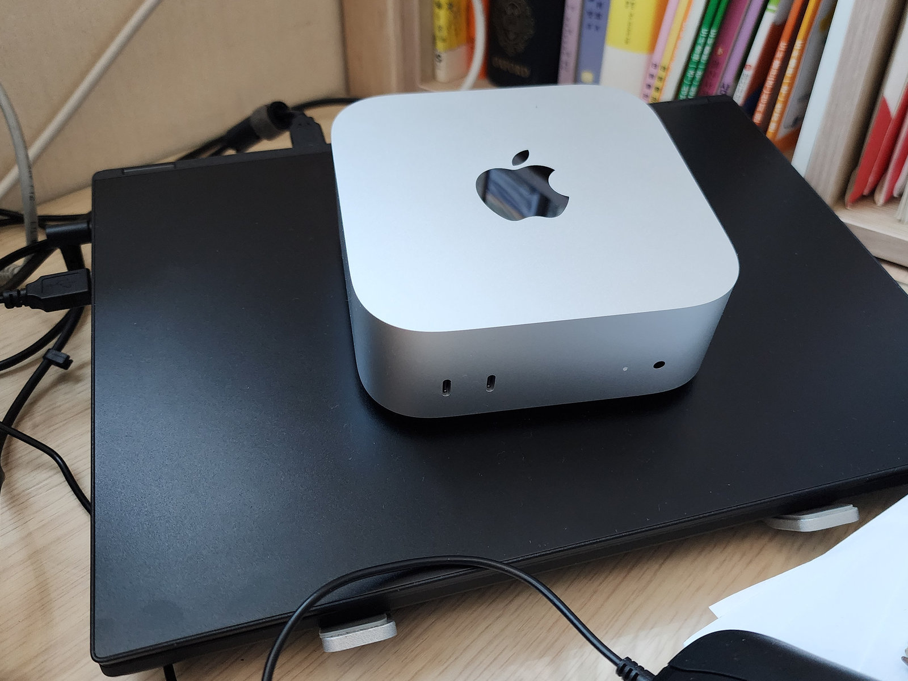
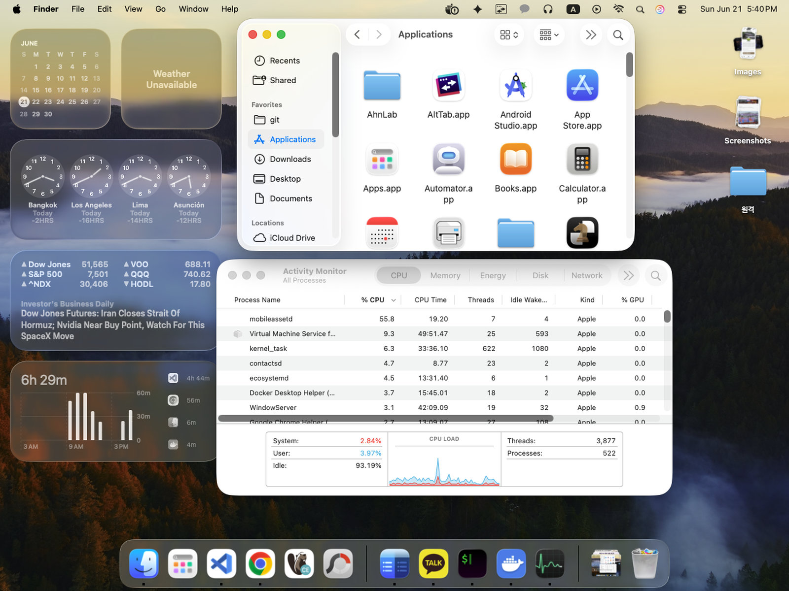
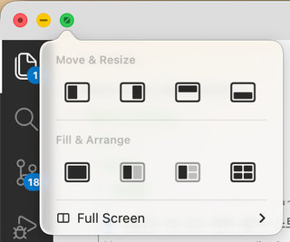

내가 일 때문에 맥을 접한 건 동료의 노트북이었다. 뭘 확인하겠다고 마우스를 붙잡고 휠을 굴렸는데 마우스 스크롤이 반대 방향이네? Alt+Tab은 왜 서브 창 전환이 안되지? 어떤 앱은 닫았는데 왜 종료가 안되지? 작업 관리자는 어디에 있지? 왜 화면 상단에 항상 메뉴 영역이 있지? 파일 공유는 어떻게 하지? 아… 완전히 낯선 동네구나!
여전히 PC 사용자 중 마이크로소프트 윈도 사용자가 압도적으로 많지만 이런저런 이유로 맥으로 넘어오는 사용자들이 있다. 나도 처음엔 어색하고 불편했지만 어느덧 맥 전용 사용자가 됐고 이제 막 맥으로 이사온 윈도 사용자를 위해 알면 좋은 것들을 정리해보기로 한다. 다만 맥이 다 좋다는 건 아니니 오해 말길.
맥을 내 돈 주고 산 건 2024년 12월이다. 가격 대비 성능이 날아가는 맥 미니가 나왔다고 회사 사람들 사이에 소문이 났는데 나는 맥에 대해서는 어렴풋이 M1 칩이 좋다는 정도만 알고 있다가 M4까지 나왔다는 소식에 호기심이 발동했고 결국 다른 사람들의 지름신이 나에게도 전염되어 맥 미니를 사게 되었다.

위 사진의 윈도 노트북은 i9 CPU에 32GB 메모리로 나름 고성능이었지만 M4 맥 미니는 마치 피처폰에서 스마트폰으로 바꿨을 때 같은 느낌의 성능 점프를 보여주었다. 같은 노트북에서 윈도는 12초, 리눅스에서는 7초 걸리던 작업이 있었는데 맥 미니에서는 4초 미만 밖에 걸리지 않았다.
하지만 마치 외국에 나가 외국인들에 둘러싸인 것처럼 맥OS라는 운영체계에서는 윈도와는 다른 이방인 같은 느낌을 많이 받았다.

일단 간단한 것들부터 보자. 이 동네에서는 이유 불문 원래 그렇게 만들어져 있는 것들.
| 윈도에서는! | 맥에서는? | 알아둘 점 |
|---|---|---|
| 시작 메뉴 및 찾기 | Spotlight, Apps | Cmd+스페이스로 검색. 하단 독의 앱 눌러 찾기. |
| 제어키 Ctrl / Alt / Win | Cmd(⌘) / Option(⌥) / Control(⌃) | 윈도의 Ctrl → Cmd, Alt → Option으로 대응 |
| Ctrl 중심 단축키 | Cmd 중심 단축키 | 복사/붙여넣기 Cmd+C, Cmd+V, 전체 선택 Cmd+A 등 |
| Alt+Tab | Cmd+Tab | 창 전환이 아니라 앱 전환. 한 앱 안의 창 전환은 Cmd+` |
| 파일 탐색기 | Finder | 하단 Dock 첫 아이콘 |
| 파일 보기 | Finder에서 스페이스 | 파일 선택 후 스페이스 눌러 바로 보기, 더블클릭 열기 |
| 작업 표시줄 | 하단 Dock | 실행 중인 앱에는 점이 표시된다 |
| 제어판/설정 | 시스템 설정 | 화면 왼쪽 위 사과 아이콘을 눌러 나오는 메뉴에 있음 |
| 프로그램 설치 | App Store, dmg, pkg | 앱스토어에서 설치하거나 앱별 사이트에서 다운받아 설치 |
| 프로그램 삭제 | Finder → 응용 프로그램 → 휴지통 | 끌어다 놓기로 대부분 되지만 다른 경우도 있음 |
| 화면 캡처 Prt Sc | Shift+Cmd+3/4/5 | 3은 전체 화면, 4는 영역 선택, 5는 메뉴 열기(나는 5만 사용) |
이제 하나씩 더 얘기할 것들을 정리해보자.
마우스 스크롤이 반대다
윈도를 쓰던 사람이 맥을 만져보겠다고 마우스를 잡았을 때 가장 먼저 느끼는 불편함이 스크롤 방향이 반대라는 점이다. 윈도에서는 창을 통해 내용(콘텐트)을 본다는 개념이다. 위로 굴리면 창을 위로 올리고, 아래로 굴리면 창을 내려 내용을 본다. 따라서 마우스 휠 방향과 스크롤 막대 방향이 일치한다.
반면 맥에서는 프로그램의 내용을 잡아 움직인다는 개념이다. 위로 굴리면 내용이 위로 올라가고, 아래로 굴리면 내용이 아래로 내려간다. 마우스 휠 방향과 스크롤 막대 방향이 반대다. 윈도에서도 트랙패드를 사용해봤다면 이게 더 자연스럽게 느껴질 수 있다. 트랙패드에서 손가락을 위로 올리면 아래쪽 내용을 볼 수 있고, 아래로 내리면 위쪽 내용을 볼 수 있기 때문이다.
맥에서는 마우스 설정으로 이 방향을 바꿀 수 있다. 시스템 설정 > 마우스로 들어가서 “자연스러운 스크롤” 토글을 끄면 윈도와 같은 방향으로 바꿀 수 있다.
설정 방법: 시스템 설정 → 마우스 → “자연스러운 스크롤” 토글 끄기
단, 트랙패드와 마우스의 스크롤 방향을 각각 따로 설정할 수는 없다. 둘 중 하나를 선택해야 한다. 트랙패드와 외장 마우스를 동시에 쓴다면 Mos나 Scroll Reverser 같은 앱으로 마우스만 따로 방향을 바꿀 수 있다.
윈도에서 Alt+Tab은 창 전환이지만 맥에서는 앱 전환이다
윈도에서는 Alt+Tab을 누르면 현재 열려 있는 모든 창을 전환한다. 맥에서는 Cmd+Tab을 누르면 현재 열려 있는 앱들 사이에서 전환이 된다. 한 앱 안에 여러 창이 열려 있으면 Cmd+Tab으로 앱을 선택한 후 Cmd+`(또는 물결)으로 창을 전환할 수 있다.
두 가지 방식으로 창을 전환하는 게 익숙하다면 상관없지만 나 같은 경우는 불편하여 AltTab이라는 앱을 설치해서 윈도처럼 창 전환이 되도록 바꿔서 쓰고 있다. 창 목록에 화면 내용도 작게 보여주면서 전환할 수 있어서 편하다.
창 닫기 단추를 눌러도 앱이 종료되지 않는다
윈도에서는 대부분 오른쪽 상단 × 단추를 누르면 앱이 종료된다. 맥에서는 왼쪽 상단 빨간 단추 을 누르면 창이 닫히지만 대부분의 앱은 현재 창만 닫고 실행은 유지되는 경우가 많다. Dock의 앱 아이콘 아래 점이 켜져 있으면 실행 중이라는 뜻이다.
앱을 완전히 종료하려면 Cmd+Q를 누르거나 메뉴 표시줄 왼쪽의 앱 이름 → “종료” 를 선택하면 된다. 처음에는 종료되지 않는 게 이상해 보이지만 나름 논리가 있다. 앱을 빠르게 다시 쓸 수 있도록 메모리에 올려두는 것이고 맥OS가 메모리 관리를 알아서 하기 때문에 종료 여부를 신경 쓰지 않아도 된다.
참고로 Cmd+H를 누르면 현재 창을 내릴 수 있다. 그리고 초록 단추에 마우스를 갖다 대면 아래와 같이 창을 다양하게 배치하는 옵션이 나타난다.

작업 관리자와 비슷한 게 있지만 별로 안본다
윈도에서는 작업 관리자를 열어서 현재 실행 중인 프로그램과 프로세스를 볼 수 있다. 종종 어떤 프로그램이 메모리나 CPU를 많이 쓰는지, 멈춘 프로그램이 있다면 종료하기 위해서 본다.
맥에서는 액티비티 모니터를 열면 비슷한 기능을 볼 수 있다. 하지만 맥에서는 프로그램이 멈추는 일이 적었고(있긴 있다!) 메모리나 CPU가 보다 효율적으로 관리되기 때문인지 CPU가 치솟는 경우가 드물어서 윈도에서처럼 자주 보지는 않는다.
메뉴 표시줄이 항상 상단에 있다
윈도에서는 모든 프로그램이 각자 창을 가지고 있고 그 안에서 메뉴를 표시할 수도 있고 아니면 임의의 UI를 표시할 수도 있지만 맥에서는 화면 최상단 메뉴 표시줄(Menu Bar)에 메뉴가 표시된다.
이 메뉴바는 기본적으로 항상 상단에 있다. 전체 화면 모드에서는 사라지지만 마우스를 화면 맨 위로 올리면 다시 볼 수 있다.
한편 하단 독은 자동 숨김이 가능하므로 설정하길 추천한다. 시스템 설정 > 데스크톱에서 "Dock 자동 숨기기 및 표시"를 켜거나 하단 독의 문맥 메뉴에서 "Dock 자동 숨기기"를 선택하면 된다.
파일 공유
윈도에서는 네트워크를 공유할 경우 파일이나 폴더를 열어 놓고 "알아서 가져가세요"하는 방식이고 맥에서도 시스템 설정의 공유를 통해 비슷하게 공유할 수 있다.
하지만 이 방식보다는 Wi-Fi와 블루투스를 이용한 AirDrop이 더 일반적이다. 파인더 또는 Spotlight에서 AirDrop을 검색하여 열고 주변 맥 기기를 선택한 후 파일을 잡아 끌어서 보내는 방식이다. 그럼 받는 사람에게 알림이 뜨고 수락하면 파일이 전송된다. 인터넷 연결이 필요 없고 빠르게 전송할 수 있다.
맥 간에는 썬더볼트 케이블을 연결하여 직접 디스크 모드로 연결하여 파일을 옮길 수도 있다. 물론 윈도, 맥 상관없이 구글 드라이브나 Dropbox 같은 클라우드 스토리지 서비스로 공유해도 된다.
아이폰처럼 맥도 앱스토어에서 앱을 받아 설치한다
윈도에서는 .exe 확장명의 설치 파일을 다운로드한 후 설치한다. 맥에서도 앱에 따라서는 웹사이트에서
.dmg나 .pkg 파일을 배포하기 때문에 다운받아 설치할 수 있지만 일반적으로는
앱 스토어(App Store)에서 다운받는다. 카카오톡, Microsoft Office, Xcode 같은
주요 앱들이 앱 스토어에 있고 업데이트도 앱 스토어에서 한꺼번에 관리된다.
하지만 크롬 같이 유명 앱 중에도 해당 웹사이트에서 받아야 하는 경우도 많다.
.dmg 같은 파일을 받아 열면 대부분은 아이콘을 응용 프로그램 폴더로 끌어넣으라고 안내하는 방식이 많다.
앱 스토어에서 설치하면 자동으로 응용 프로그램 폴더에 설치된다.
바탕화면에 아이콘을 덕지덕지 놓지 않는다
윈도에서 바탕화면은 사실상 즐겨찾기 기능으로 쓰는 경우가 많다. 맥에서도 바탕화면에 뭘 놓을 수는 있지만 모든 걸 모아두는 방식은 동작 방식이 달라 오히려 불편해진다. 앱 실행은 하단 독이나 Launchpad, Spotlight(Cmd+스페이스)로 하는 게 일반적이다.
또 아이콘 배치도 윈도처럼 마음대로 안되고 기본적으로 자동이다. 파일들을 바탕화면에 흩어두는 데 익숙했다면 처음엔 불편하지만 새 방식에 익숙해지는 게 낫다. 앱 실행이나 파일을 Cmd+스페이스로 검색해서 여는 게 더 편해질 것이다.
처음 이사온 사람 입장에서 맥은 낯선 동네 같지만 주변 길 몇 개를 익히고 나면 꽤 조용하고 편한 동네다. 길을 바꾸고 집 위치도 바꾸고 싶을 때가 있지만 기회 비용을 생각하면 만족할 수도 있다.
다음 글에서는 개발자 입장에서 윈도에서 맥으로 넘어오며 달라진 것들을 정리해보려 한다.